What TailSafe does, why it matters, and how to use it, step by step and in simple words.
Inside this guide
Start here
This guide explains TailSafe from the very beginning. You do not need to know anything about fire safety, statistics or computers. Every new word is explained the first time it appears, and the word list at the end explains them all again.
The idea again, in the simplest words possible.
Something to do in TailSafe right now.
A common mistake, or a limit to keep in mind.
The one thing to take away.
Floors are written the Hong Kong way. G/F is the ground floor, 1/F is the first floor above it, 14/F is the fourteenth floor above the ground. A 40-storey building has the ground floor plus 39 floors above it, so its floors run from G/F to 39/F.
Buttons and labels are printed in bold, exactly as they appear on the screen, for example Run stress test.
Before touching any buttons, it helps to understand the problem TailSafe was built for. This part needs no computer at all.
Chapter 1
Many people in Hong Kong live very high up. When there is a fire, almost all of them have to walk down the stairs.
Hong Kong has a great many tall homes. Public housing blocks and private towers of 30 to 50 storeys, and more, are ordinary. Well over a thousand people can live in one building, and they share only a few staircases, often just two.
The building this guide uses as its main example is a 40-storey public housing block shaped like a cross. In TailSafe's model it has 760 flats, 2 staircases (called Stair A and Stair B), 3 lifts, and on a Sunday night at 3 a.m. about 1,825 residents at home. The building and its residents are made up by TailSafe; they are not a real block.
An evacuation (everyone leaving a building because of danger) happens in a few stages:
The lifts are normally not used to escape. In Hong Kong they are kept for the firefighters. One lift in every building is the firefighting lift, which only firefighters use. So almost everyone must use the stairs.
Some people cannot use the stairs on their own, for example a person in a wheelchair. In TailSafe, such a person is carried down by their family or a live-in domestic helper if someone able is at home. Otherwise they wait for the firefighters to rescue them. Rescue can take a long time, because firefighters climb the stairs and bring people down one household at a time.
Many tall buildings have refuge floors: an open floor, every so many storeys, where people can step out of the staircase into fresher air and rest before going on.
A fire in a tall building is a slow walk down a narrow staircase, shared with hundreds of neighbours, some of whom are asleep, old or unable to walk.
Chapter 2
Every fire is a race between two clocks: how long a place stays safe, and how long people need to leave it.
In a building fire, the smoke is often more dangerous than the flames. Smoke does two things. It makes the air dark, so you cannot see the way. And it is poisonous: breathing it makes people weak and confused, and in the end they cannot move. When a place has become too dangerous to be in, it is called untenable.
Fire engineers describe the race with two clocks:
If the walking clock is shorter than the smoke clock, everyone leaves in time. If the walking clock is longer, someone is still there when it has become dangerous. TailSafe writes this as RSET > ASET (“RSET is bigger than ASET”) and counts how often it happens.
In TailSafe, a place becomes untenable at the first moment one of these is true:
These limits follow ISO 13571, an international guideline on how long people can survive in a fire. The TailSafe settings file notes that the exact values still have to be checked against the edition of the guideline in use.
ASET is how long you have. RSET is how long you need. Trouble starts when you need more time than you have.
Chapter 3
This is the most important idea in TailSafe, and the reason for its name.
Think about your trip to school or work. Most days it takes 30 minutes. Some days 35. But now and then the bus breaks down and the trip takes an hour and a half. If someone asks how long your trip takes, the average (perhaps 33 minutes) is a fine answer for planning an ordinary day. But if you must never, ever be late for an important exam, the average is no use at all. You need to know about the bad days.
Fires are the same. A building checked only against an average night can look fine, while a few bad nights are very bad. And fires do not choose average nights: they happen at 3 a.m., when a staircase is full of smoke and a lift is broken.
Imagine the same fire night happening 300 times, each time a little differently: different people at home, a different flat on fire, the smoke arriving at a different moment. Draw a bar for each of the 300 nights, from the quickest evacuation to the slowest:
The same 300 nights can be drawn another way, as a histogram: the nights are sorted into boxes by how long they took, and each bar shows how many nights landed in each box. Most nights pile up in the middle. A thin trail of slow nights stretches out to the right. That trail is called the tail, and it is where TailSafe gets its name.
| Name | What it means | In the example |
|---|---|---|
| Mean (average) | Add up the times of all nights and divide by the number of nights. | 136.5 min |
| Median | The night in the middle: half the nights are quicker, half are slower. | 131.6 min |
| P95 (95th percentile) | 95 nights in every 100 are quicker than this. It is the border of the worst 5%. | 199.5 min |
| CVaR95 | Take the worst 5% of nights (here the worst 15 of 300) and average them. It answers: when things go badly, how badly, on average? | 218.1 min |
CVaR95 is short for conditional value at risk at 95%. The name comes from banks, which use it to ask “on our worst days, how much could we lose?”. TailSafe borrows the idea and asks “on the worst nights, how long does it take?”. In this guide it is often called simply the average of the worst 5%.
Why not simply look at the single worst night? Because one night can be a freak. The average of the worst 5% is steadier, and still tells you about the bad nights.
TailSafe cares most about CVaR95, the average of the worst 5% of nights, because the bad nights are where people get hurt. When it tests a change, it asks first how much the change shortens the bad nights, not the average one.
Chapter 4
Not everyone is equally likely to be among the last people out.
Hong Kong's population is ageing, so the slowest groups are growing. In TailSafe, some households also have a live-in domestic helper, who can help an older person move or carry a wheelchair user down.
In the 1,000-night study of the 40-storey example (chapter 30):
The worst nights are mostly about a small number of people: the old, the frail and wheelchair users on high floors. A good plan has to work for them.
Chapter 5
Many of the numbers inside TailSafe are educated guesses. TailSafe keeps every physical and population number in one settings file, config/params.yaml, and every number there says where it comes from. Of its 169 numbers, 146 are marked ASSUMPTION — needs citation: they are reasonable guesses that still need a proper source. The walking speed of frail residents, reaction times at night and how quickly firefighters rescue people are among them. The remaining numbers name a published source, which is still marked to be checked against the edition used.
That is why TailSafe is good for understanding and comparing (where does the risk come from? which change helps more?) and not for exact predictions (how many minutes will it take in my building?).
Never say “TailSafe says our building is safe”. Say instead: “TailSafe suggests where the risk concentrates and which changes might help. A fire engineer should check this.”
The full responsible-use notice, which TailSafe shows on every screen and in every report, is in chapter 32.
This part opens the box. It explains what TailSafe does behind the buttons, one idea at a time. There is no maths, only pictures and everyday examples.
Chapter 6
TailSafe works in seven stages. The web app follows the same order, so once you know these stages you know your way around.
The chapters in this part follow the same stages: the building (7), the people (8), one night (9), many nights (10), the results (11), the causes (12) and the fixes (13). Chapter 14 introduces four helpers that make it all easier to see and use.
Chapter 7
TailSafe does not see a building as a picture. It sees a map of places, and of the connections people use to move between them.
The places are flats, corridors, lobbies, stair landings, refuge areas and exits. The connections are the doors, the walkways and the stair flights between them. Every connection knows how long it is and how wide it is. Mathematicians call a map like this a graph (nothing to do with charts): the places are its nodes and the connections are its edges.
Only so many people fit through a door or down a staircase each second, just as only so much water fits through a pipe. When more people arrive than can pass, the rest wait, and a queue forms, like at a supermarket checkout.
How many people can pass depends on the width. TailSafe uses a standard engineering method, the hydraulic model from the SFPE Handbook of Fire Protection Engineering. It says that a staircase lets roughly one person per second pass for each metre of usable width, and a door a little more. The usable width is a bit less than the real width, because people keep about 15 cm away from the wall on each side.
Here is why this matters so much. The staircases in the 40-storey example are 1.1 m wide. Take 15 cm off each side and 0.8 m is usable, which lets about 48 people a minute down. The block has about 1,825 residents at night. Just squeezing all of them through two such staircases takes about 19 minutes; through one staircase it takes about 38 minutes. So if smoke closes one staircase, the whole building has to squeeze through the other one.
People walk more slowly in a crowd, more slowly on stairs than on the flat, and more slowly still after many floors, because they get tired. Smoke slows them down too, because they cannot see well. TailSafe includes all four effects.
On every floor, people coming out of the corridor have to squeeze into a staircase that is already carrying people from the floors above. TailSafe lets the two streams take turns in a fixed ratio, like cars merging where two lanes become one.
TailSafe can build four kinds of Hong Kong building for you. They are generic designs made by the computer from a set of rules (TailSafe calls them procedural), not copies of real buildings.
A scissor staircase is two staircases twisted around each other in the same shaft, so that each floor can reach two separate escape routes. A storey count includes the ground floor.
Chapter 8
TailSafe fills the building with made-up people, called synthetic people. No real person's data is ever used.
| Kind of person | What is special about them in TailSafe |
|---|---|
| Able adult | Walks at a normal pace and can help others. |
| Child | Moves together with the family. |
| Older adult (65 to 79) | Walks more slowly, especially down stairs, and tires sooner. |
| Frail older adult (80 and over) | Walks very slowly and tires quickly. Waits for an evacuation lift when lifts are in use. |
| Wheelchair user | Cannot walk down stairs. Is carried down by the household if an able person is at home, waits for an evacuation lift if lifts are in use, or waits for the firefighters. |
| Domestic helper | A live-in helper, who can help an older person move or carry a wheelchair user down. |
For each kind of person TailSafe knows a walking speed on the flat, going down stairs and going up stairs, how quickly they tire, how long they usually take to react to the alarm, and how much room they take up. Speeds and reaction times are not fixed: every person gets their own, drawn from a range.
Every flat gets a household. Its size depends on the size of the flat. The ages of its members are drawn so that, over the whole building, the share of residents aged 65 and over matches the setting you choose. Some households have a live-in helper. Some flats are empty.
Who is at home depends on the time. TailSafe knows four time slots: weekday day, weekday night, weekend day and weekend night. At night most people are at home and asleep; on a weekday afternoon many are out at work or school.
In a care home, residents live in rooms, and staff help them out: each member of staff escorts the residents of one room.
Every night TailSafe invents a new set of neighbours for the building, with realistic ages, speeds and habits, and then watches how they get out.
Chapter 9
A simulator is a program that imitates something real. TailSafe's simulator plays out one fire night, second by second.
This is what happens during one simulated night:
A 40-storey night takes the computer between a tenth and a third of a second, which is what makes hundreds or thousands of nights possible.
TailSafe's smoke model is deliberately simple. Each room, corridor, lobby and staircase is treated as one box of air, with one smoke level. Smoke flows from box to box through the openings between them, more easily upwards in stairs and lift shafts. The fire itself grows faster and faster until it reaches its full size; how fast it grows and how big it gets are rolled for every night. This is an engineering estimate, not a detailed computer fire simulation. Results from a detailed fire simulation program can be loaded into TailSafe instead.
The main simulator does not follow every footstep. It moves groups of people along the map's connections and keeps a queue at the end of each one, a bit like water flowing through pipes. Engineers call this a mesoscopic model (“meso” means “in the middle”: more detailed than a single equation, less detailed than following every step). TailSafe also has a slower, person-by-person simulator for closer looks, described in chapter 14.
One simulated night is one possible version of the fire, played out second by second, with queues at every narrow place and smoke creeping through the building.
Chapter 10
We never know exactly how a real fire night will go. So TailSafe does not play the night once: it plays it hundreds or thousands of times.
Each time, TailSafe “rolls the dice” again for everything that is uncertain. This way of working things out by repeating a random experiment many times is called the Monte Carlo method, after the famous casino.
You can choose 100, 300, 1,000 or 2,000 nights. More nights give more trustworthy answers but take longer. The browser version always uses 300. On a four-core computer, 1,000 nights of the 40-storey example take a little over a minute.
A computer's dice are not truly random. They come from a starting number called the seed. The same seed always gives exactly the same nights. That means anyone can repeat your study and get exactly the same numbers, and it means you can change one setting and be sure that everything else stayed the same.
When TailSafe compares two plans, it runs both on the very same nights: the same people, the same fire, the same broken lift. Only the plan is different. It is like testing two umbrellas in the same rain, instead of one in a drizzle and the other in a storm. Statisticians call this common random numbers.
Every number worked out from a few hundred nights wobbles a little. Run another 300 nights with a different seed and you get a slightly different answer. So TailSafe gives each important number a range, the 95% confidence interval (CI): we can be fairly sure the true value lies inside it. The more nights, the narrower the range.
With few nights, “the worst 5%” is only a handful of nights, and their average can mislead. For the time until everyone is out in the 40-storey example, the first 100 nights gave 206 minutes and all 1,000 nights gave 219. Use at least 300 nights to explore, and 1,000 or more for comparisons that matter.
Chapter 11
After a stress test, TailSafe reports a handful of numbers. This chapter explains each one.
| On screen | What it measures |
|---|---|
| 195% of occupants | The time until 95 out of every 100 people are out. One or two very late people do not change it, so it shows how the crowd as a whole does. |
| 2Last self-evacuee | The time until the last person who left on their own is out: on foot, carried by family, or by lift. It leaves out people waiting to be rescued, so it shows how the building works for people who can move. |
| 3Everyone out | The time until the very last person is out, including people brought down by the firefighters. It depends heavily on how rescue works, which TailSafe can only estimate. |
For each of the three, TailSafe gives the mean, the P95 and the CVaR95 (see chapter 3), each with its 95% confidence interval. Read them together: “everyone out” tells you about rescue, the other two about the stairs.
As a person breathes smoke, TailSafe adds up a dose. The dose counts mainly carbon monoxide (a poisonous gas in smoke) and heat. Fire engineers call it the fractional effective dose, or FED.
This is the share of nights on which someone is still on a floor after its corridors have become untenable, or breathes a harmful dose of smoke (an FED of 0.3 or more). It is written as a number between 0 and 1: 0.60 means 60 nights in every 100. It needs the smoke to be simulated; without smoke it shows a dash.
On each of the worst nights, TailSafe looks at the late stragglers: the households still inside near the end of that night. It then compares the kinds of people among the stragglers with the kinds of people in the building, using a risk ratio:
risk ratio = share of the late stragglers ÷ share of all the people
A risk ratio of 1 means a group is just as common among the late stragglers as in the building. A risk ratio of 21 means it is 21 times more common. It also names the floors where the stragglers live, for example “wheelchair users on 30/F to 39/F”.
Floors that fail shows, for each floor, how often someone is still there after it has become untenable. Floors at and just above the fire are usually the worst. Where stairs queue shows how much queueing happens on each flight of each staircase on the worst nights, in person-minutes: if 10 people wait for 3 minutes, that is 30 person-minutes.
Chapter 12
A bottleneck is a narrow place that slows everything behind it, like the neck of a bottle. TailSafe finds the bottlenecks that make the worst nights bad.
The obvious approach is to look for where the crowd is thickest. TailSafe goes one step further and asks a what-if question for every candidate: if this part of the building were better, how much shorter would the worst nights be? Asking what would have happened if something had been different is called a counterfactual test.
The candidates are:
For each candidate, TailSafe gives it more room (50% more capacity by default; you can also choose 25% or 100%), re-runs the bad nights with exactly the same dice, and measures how much the average of the worst 5% falls. The candidates are then ranked, the biggest improvement first, each with its confidence interval.
TailSafe also works out two simpler facts about the building's escape routes:
TailSafe does not guess which door matters. It tries improving each one on the bad nights and measures the difference.
Chapter 13
TailSafe looks for operational fixes: changes to how a building is run, not to its walls. They are cheap and quick compared with building work.
| Fix | What it means | The catch |
|---|---|---|
| Evacuation lifts | Use the ordinary (not the firefighting) lifts to carry residents who cannot manage the stairs: wheelchair users and frail older adults, or wheelchair users only. The lifts start after a short changeover and can serve the highest floors first, the nearest waiting floor, or the lowest floors first. | People who wait for a lift may get out later than if they had walked. |
| Hold stair doors open | Keep the staircase doors open, so more people can pass. | Smoke also gets into the staircases more easily. |
| Stair assignment by floor | Tell some floors to use one staircase and the rest the other, so the streams do not collide. If the assigned staircase is blocked, people use whatever is quickest. | A staircase can end up with too many people. |
| Phased release | Let some floors leave first while others wait in their flats for a set time. | People waiting in their flats still breathe any smoke that reaches them. |
| Floor wardens | Trained residents or staff on a floor knock on every door of their floor and the floors next to it, so people react sooner, and each helps one household that cannot use the stairs alone. | They have to be recruited and trained. |
There are far too many combinations to try them all, so TailSafe searches step by step, testing every candidate on the same set of nights:
If you try 30 plans on the same 60 nights, the plan that looks best is partly lucky: it happens to suit those particular nights. This is called the winner's curse. It is like a student who memorised last year's exam: the real test is a new exam. So TailSafe tests the winning plan again on fresh nights (200 by default) and only then says whether it helps.
For every outcome, TailSafe shows the value without the plan, with the plan, the change, and the confidence interval of the change. Then it gives a verdict:
A fix can make one thing better and another worse. In the 40-storey example, evacuation lifts halve the time until everyone is out, but make the time for 95% of people to get out several minutes longer. TailSafe always shows every outcome and warns you about trade-offs. It never hides them.
Chapter 14
Four more parts of TailSafe make the results easier to see, quicker to explore and easier to share.
The fast simulator treats crowds like water in pipes. For a closer look, TailSafe has a second, microscopic simulator that moves every single person as a small disc across the floor plan, keeping a safe gap to whoever is in front (a collision-free speed model, after Tordeux, Chraibi and Seyfried, 2016). It is much slower, so TailSafe uses it only to replay single nights, and to check that the two simulators roughly agree. In a 20-storey block they agree on when the last walker leaves to within a few seconds on average; for most of the crowd, the detailed one is 7 to 15% slower, because real queues at doors take up room.
A neural network is a program that learns patterns from examples. TailSafe's network has studied 800 simulated buildings and nights. Show it a building and some settings, and it estimates the results in a fraction of a second, instead of a minute or more. It passes messages along the building's map, from flat to corridor to staircase, which is why it is called a graph neural network. Its formal name is a surrogate: a stand-in for the simulator.
On buildings like the ones it learned from, its estimates of the bad nights are usually within 10 to 20% of the simulator. On a kind of building it has never seen, it can be off by a third or more.
The quick guesser learned from the simulator, not from real fires, so it can only be as good as the simulator, and usually a little worse. It warns you when your settings are outside what it has learned. Before you rely on a number, press Confirm with full simulation.
A one-page summary for a building manager, which can be saved as a PDF. TailSafe writes it by filling fixed sentences with the numbers from your results, and then checks every number in the text against the results. Whoever runs the full app can also switch on an optional AI writer (a large language model) to draft the text. It is off unless it is set up. If its draft contains any number that is not in the results, the draft is thrown away and the fixed-sentence briefing is shown instead.
It turns a picture of a floor plan into a TailSafe building. It finds the walls, rooms, doorways and staircases in the picture; you correct its mistakes; then it stacks the floor into a tower. It works in the full app only. Chapter 29 shows how to use it.
There are two ways to use TailSafe: the browser version, which anyone can open in a few seconds, and the full app, which runs on your own computer and can study any building and any night. This part explains both, click by click.
Chapter 15
The browser version is a website: nothing to install, works on any phone. The full app runs on your own computer and can simulate anything you ask.
| Browser version | Full app | |
|---|---|---|
| What you need | A web browser | A computer with Docker (or Python and Node) |
| Setting up | None: open a web address | A one-off build of several minutes |
| Works on | Any phone, tablet or computer | The computer running it, and any device that can reach it |
| Buildings | The four standard building types, at their standard sizes | The four types at any size, a floor-plan image, or your own building file |
| Scenarios | The reference scenario of each building (Sunday, 3 a.m.) | Any settings you like |
| Stress test, 3D view, replay, bottlenecks, plan, briefing | Recorded in advance from the simulator, 300 nights per building | Worked out when you ask, 100 to 2,000 nights |
| What-if | Yes, for any settings (it runs on your device) | Yes, plus Confirm with full simulation for any settings |
| Floor-plan reader | No | Yes |
| Where the work happens | On your device; nothing you enter is uploaded | On the computer running the full app |
| If you want to… | Use |
|---|---|
| See what TailSafe does, or show it to someone | the browser version |
| Look at the four example buildings on your phone | the browser version |
| Get a quick estimate for different settings | the What-if screen, in either version |
| Run a full stress test with your own settings, such as a daytime fire or more older residents | the full app |
| Study a building of a different size, your own building file, or a floor-plan image | the full app |
| Let a team use it from their own phones and laptops | the full app on one computer they can reach, or on a public web address (chapter 18) |
Chapter 16
You need a phone, tablet or computer with an up-to-date web browser (such as Chrome, Edge, Firefox or Safari) and an internet connection. That is all.
https://chingkheinganba231005.github.io/Tail_Safe/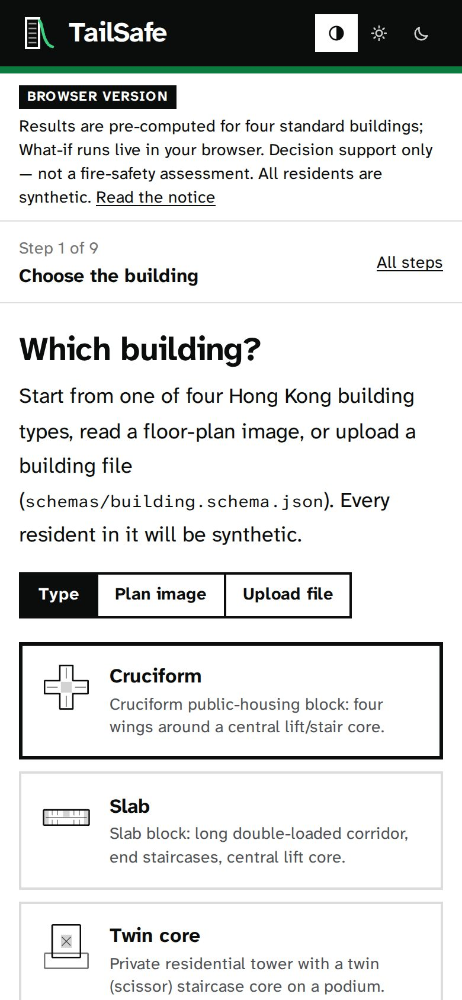
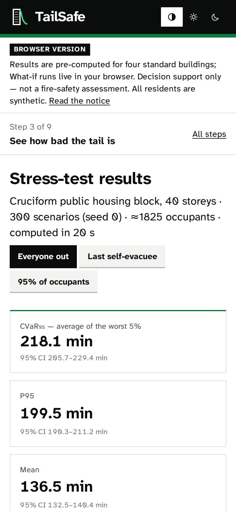
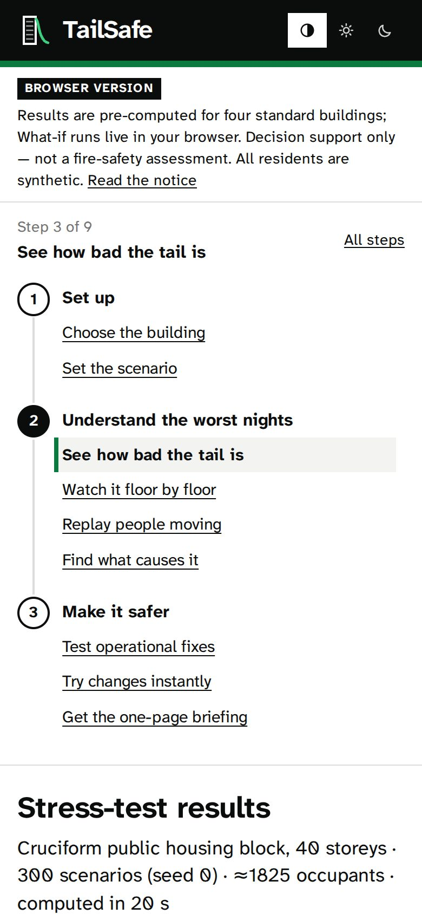
The browser version only holds results for the reference scenario of each building. If you change the scenario, the Run stress test button stops working and this message appears. Press Back to the reference scenario to undo your changes, or use the What-if screen to get a quick estimate for your settings.
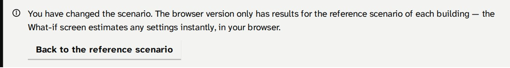
Chapter 17
Docker is a free program that runs software inside a container: a sealed box that holds everything the software needs. With Docker you do not have to install Python or anything else yourself.
https://www.docker.com/products/docker-desktop/ and install it. On a Mac, choose the version for your chip (Apple or Intel). The installer may ask you to restart the computer. Then open Docker Desktop and wait until it says that Docker is running.https://docs.docker.com/engine/install/.git clone https://github.com/chingkheinganba231005/Tail_Safe.git
https://github.com/chingkheinganba231005/Tail_Safe, click the green Code button, then Download ZIP. Unzip the file. You get a folder called Tail_Safe-main.A terminal is a window where you type commands.
powershell and press Enter.cd followed by a space, drag the TailSafe folder into the window, and press Enter.docker build -t tailsafe .
Type it exactly, including the full stop at the end, which means “this folder”. The first build downloads a lot of software and can take several minutes. Later builds are quicker, because Docker remembers the parts that have not changed.
docker run -p 7860:7860 tailsafe
After a few seconds a line like Uvicorn running on http://0.0.0.0:7860 appears. TailSafe is now running. Leave this window open.
In your web browser go to http://localhost:7860. localhost means “this computer”, and 7860 is the port: a numbered door on your computer where TailSafe is listening. The label under the black bar now says PROTOTYPE instead of BROWSER VERSION, and every option works.
192.168.1.23.
ipconfig and look for IPv4 Address.hostname -I and use the first address.http://192.168.1.23:7860, using your computer's address.Press Ctrl and C together in the terminal window, or stop the container in Docker Desktop. To start again later, repeat step 5; you do not need to build again.
git pull in the folder), then build again (step 4).Chapter 18
If you want to change TailSafe itself, run it directly from its code. You need Python 3.11 or newer, Node 20 or newer, git and make. These commands are for macOS and Linux; on Windows, use Docker or the Windows Subsystem for Linux (WSL).
git clone https://github.com/chingkheinganba231005/Tail_Safe.git cd Tail_Safe make install # set up Python and install TailSafe (once) make web # build the web app (once, and after changing it) make api # start TailSafe
Then open http://localhost:8000. While changing the web app itself, make dev starts TailSafe with a web app that reloads whenever you save a file, at http://localhost:5173. make check runs all the tests. The development guide, DEVELOPMENT.md, has the details.
Hugging Face is a website that can run a Docker container for you, for free, at a public web address; such a hosted app is called a Space. TailSafe comes with an automatic workflow that sends the full app to your Space whenever the code on GitHub changes:
huggingface.co.yourname/tailsafe.HF_TOKEN containing the token, and a variable called HF_SPACE containing the Space name.https://huggingface.co/spaces/yourname/tailsafe.Anyone with the address can use it, and what they enter goes to that server. The free hardware has two processor cores, so runs take about twice as long as on a four-core laptop, and only one simulation runs at a time. A free Space may pause when nobody has used it for a while; the next visitor then waits for it to start.
TailSafe has nine screens, one for each step. This part walks through every one: what it is for, what to press, and how to read what you see. The pictures come from the browser version, using the 40-storey example; the full app looks the same.
Chapter 19
Every screen has the same frame around it. Once you know the frame, you always know where you are and where to go next.
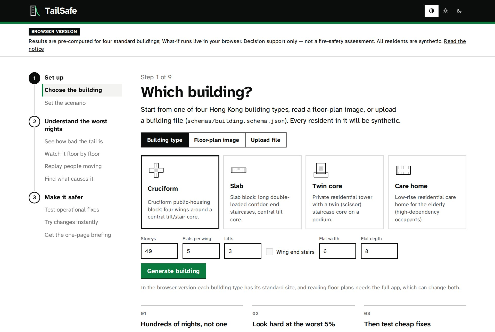
1 2 3 4 5 6 7At the bottom of every screen there is a Back link to the previous step, and from step 3 onwards a green Continue button to the next one. Steps 1 and 2 move on with their own buttons, Confirm building → and Run stress test. So you can go through all of TailSafe by pressing the green buttons, one after another.
The footer at the very bottom of every screen links to the project page, this guide, the assumptions, the validation and the source code.
On a narrow screen the step list is folded away. Near the top you see “Step 3 of 9” and the name of the step; tap All steps to open the list (see the phone pictures in chapter 16). Everything else works the same way.
Chapter 20
Pick the building to test. Everything that follows is worked out for this building.
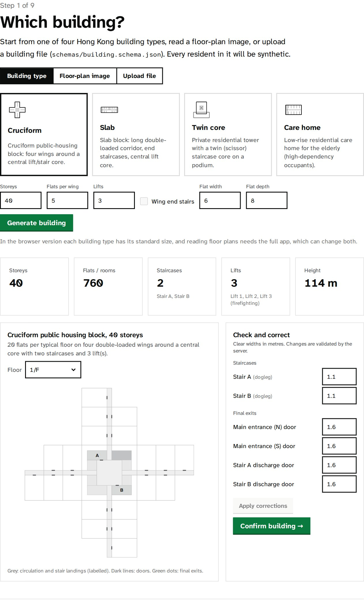
1 2 3 4 5 6 7 8Grey areas are corridors, lobbies and stair landings; each staircase is labelled with its letter (A, B, and so on). Dark lines across openings are doors. Green dots are the final exits to the outside. White boxes are flats (or, in a care home, rooms).
| Building type | Options (standard values in brackets) |
|---|---|
| Cruciform | Storeys (40), flats per wing (5), lifts (3), wing end stairs (off: when on, adds a staircase at the end of each of the four wings), flat width (6 m) and depth (8 m). |
| Slab | Storeys (30), flats per side of the corridor (10), lifts (2), flat width (6 m) and depth (8 m). |
| Twin core | Storeys (45), podium levels without homes (3), flats per floor (8), lifts (3), protected lobbies in front of the staircases (on), flat width (7 m) and depth (9 m). |
| Care home | Storeys (4), rooms per side of the corridor (6), lifts (1), room width (4.5 m) and depth (6 m). |
Generate the cruciform block twice, once with 20 storeys and once with 40, and run the same stress test on both (step 2). How much longer do the worst nights take in the taller block?
Upload file (full app) takes a building described in a JSON file that follows TailSafe's building schema (schemas/building.schema.json). The easiest way to make one is to start from a generated building: tailsafe building generate writes such a file (chapter 31).
Chapter 21
A scenario describes the fire night you want to test. You set what you know; everything else is rolled again for every night.
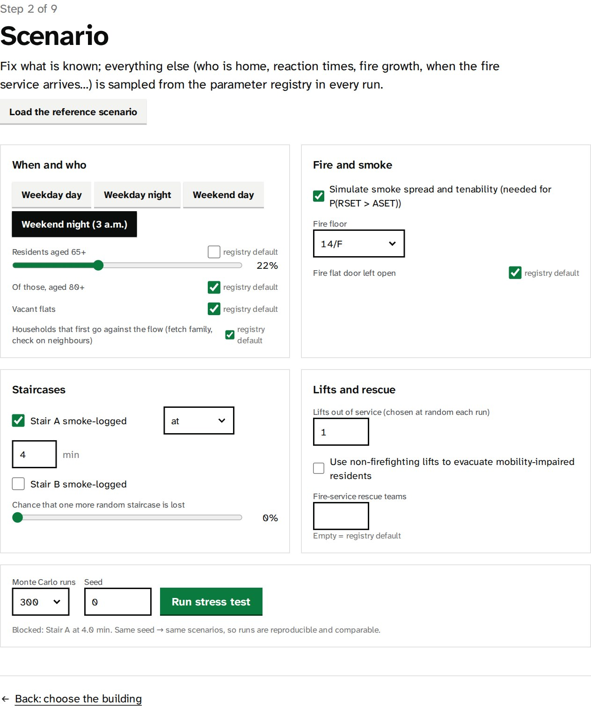
1 2 3 4 5 6 7| Setting | What it does |
|---|---|
| Time of day | Weekday day, weekday night, weekend day, or weekend night (3 a.m.). It changes who is at home and how quickly they react. |
| Residents aged 65+ | The share of residents aged 65 or over (up to 60%). Untick registry default to set your own. |
| Of those, aged 80+ | Of the older residents, the share who are 80 or over (the frail group). |
| Vacant flats | The share of empty flats (up to 50%). |
| Households that first go against the flow | The share of households that first fetch family or check on a neighbour. |
| Simulate smoke spread and tenability | Switches the smoke model on. Needed for P(RSET > ASET) and for smoke to slow and harm people. |
| Fire floor | A chosen floor, or Random floor (a new floor every night). |
| Fire flat door left open | How often the burning flat's door is left open (only with smoke on). |
| Stair A smoke-logged (one line per staircase) | Tick to lose that staircase. Choose at and a time in minutes, or between two times for a different random time every night. |
| Chance that one more random staircase is lost | On this share of nights, one more staircase, chosen at random, is lost at a random time in the first 15 minutes. |
| Lifts out of service | How many lifts are broken. Which ones is chosen at random every night. |
| Use non-firefighting lifts to evacuate mobility-impaired residents | Turns on evacuation lifts, with Dispatch (highest floors first, nearest waiting floor, or lowest floors first) and Who may wait for a lift (wheelchair users and frail older adults, or wheelchair users only). |
| Fire-service rescue teams | How many rescue teams the firefighters use. Leave it empty for the standard number. |
| Monte Carlo runs | How many nights: 100, 300, 1,000 or 2,000. |
| Seed | The starting number for the dice. Same seed, same nights. |
“Registry default” means TailSafe uses its standard value from its settings file (the parameter registry, config/params.yaml).
Run the reference scenario with 300 nights. Then untick Stair A smoke-logged and run again with the same seed. Because the seed is the same, the people and the fires are the same, so any difference is caused by the staircase alone.
In the browser version, Run stress test only works for the reference scenario. If you change anything, a message offers to put it back (chapter 16). The What-if screen (step 8) can estimate any settings.
Chapter 22
This is the heart of TailSafe: how long the evacuation takes over all the simulated nights, and how bad the worst nights are.
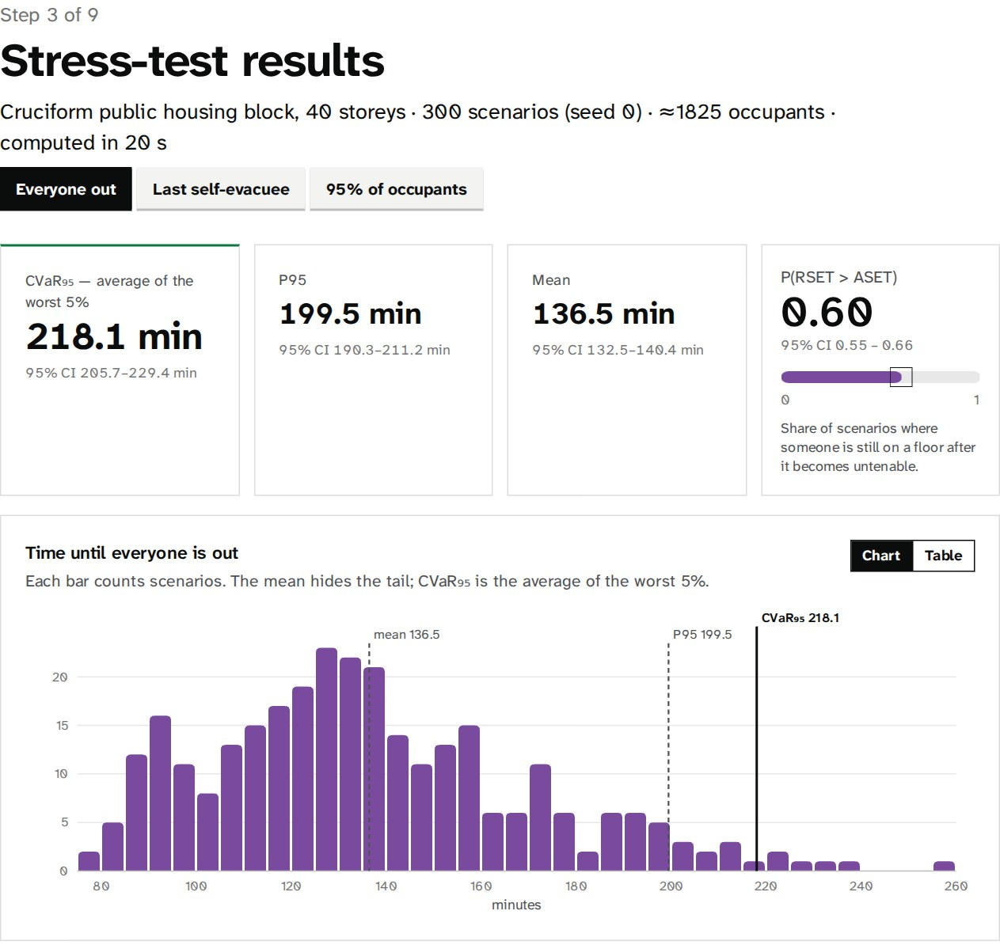
1 2 3 4 5The line under the title tells you what the numbers are based on: the building, the number of nights and the seed, about how many people were in the building, and how long the computer took.
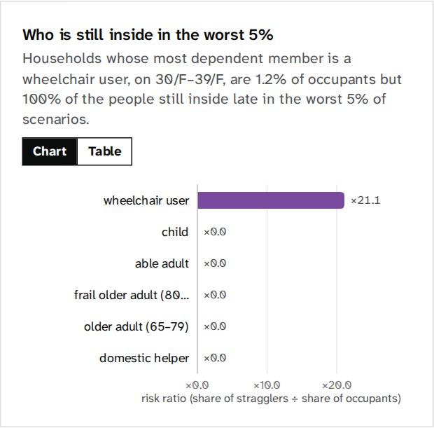
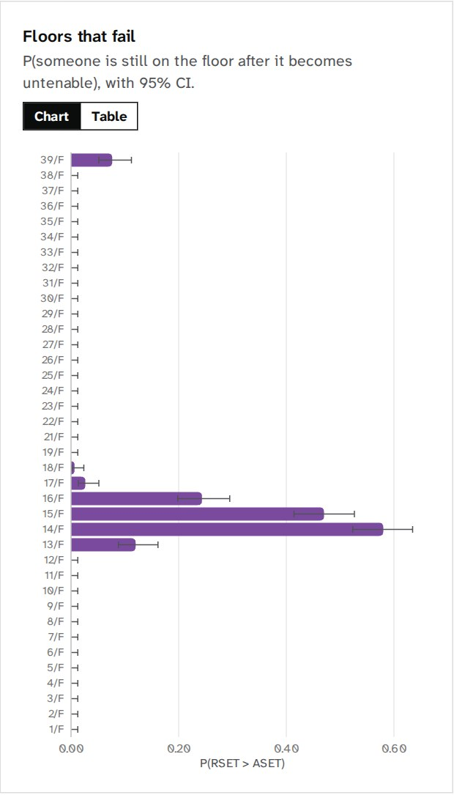
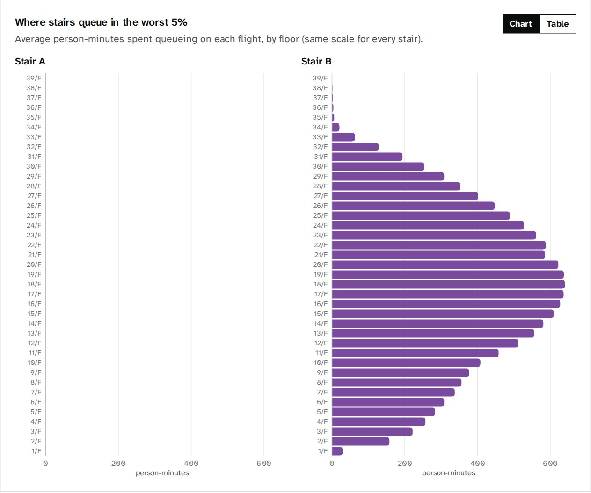
At the very bottom, Replay a scenario in 3D lists the ten worst nights and the median night. Click one to watch it in step 4. (In the browser version, the worst night and the median night are recorded.)
Compare CVaR95 with the mean. If the average of the worst 5% is much larger than the mean, a few very bad nights are hiding behind a comfortable average. Then look at who is still inside and where the stairs queue: that tells you whom the bad nights hurt, and where.
Chapter 23
The 3D view replays one night, with the same people, fire and broken lift as in the stress test, so you can see how a bad night unfolds: where the smoke goes, where the queues build, and who is left behind.
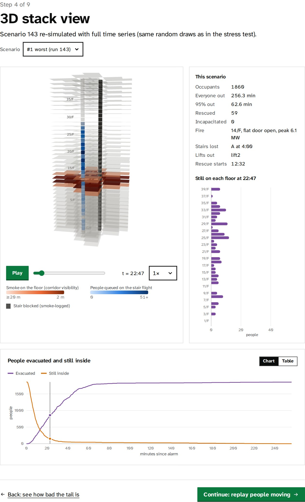
1 2 3 4 5 6Chapter 24
A closer look at one night: every person is a dot on the floor plan, walking, queueing and taking the stairs.
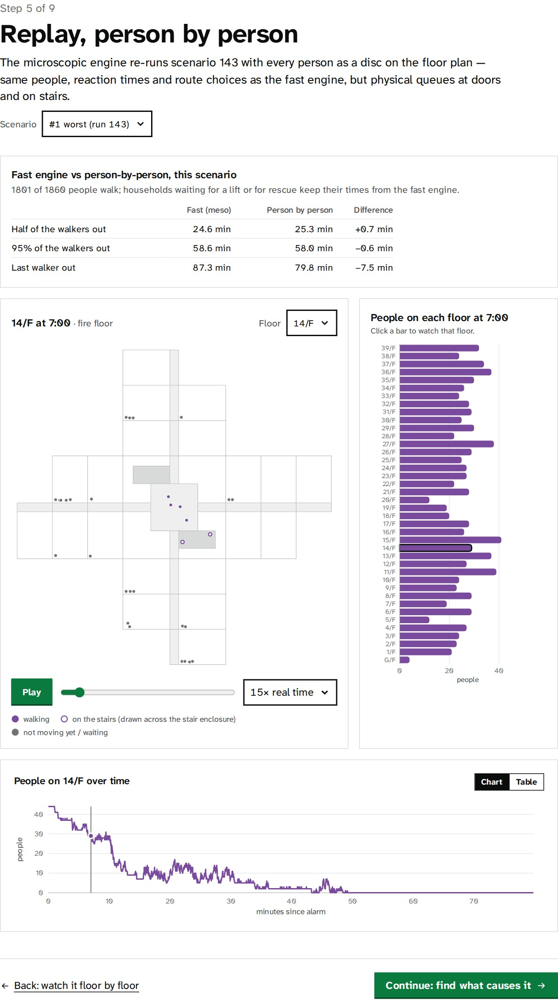
1 2 3 4 5 6People who wait for a lift or for the firefighters are not walked by this simulator; they keep the times from the fast simulator. The comparison table counts only the people who walk.
Watch the fire floor first: its households react quickly and leave early. Then click the bar for a high floor, such as 35/F, and play again at 15×: you will see people waiting because the staircase below them is full.
Chapter 25
Which staircase, door or exit makes the worst nights bad? This screen ranks them by testing each one (chapter 12).
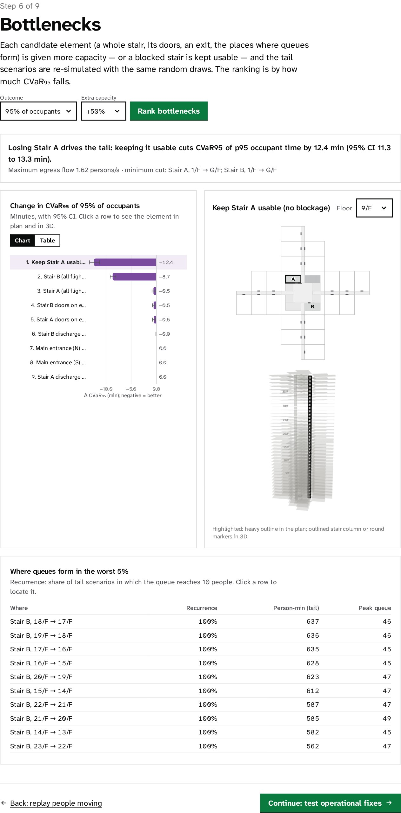
1 2 3 4 5“Losing Stair A drives the tail: keeping it usable cuts CVaR95 of p95 occupant time by 12.4 min (95% CI 11.3 to 13.3 min).” More room on Stair B would help next (8.7 minutes). Wider doors or exits would hardly change anything. The building can get out at most 1.62 people per second, limited by the bottom flight of each staircase.
A ranking tells you what matters most, not what to build. “Stair B, +50%” means “if Stair B could carry 50% more people”. Keeping a staircase free of smoke, or its doors clear, may achieve much of that without any building work. Discuss it with a fire engineer.
Chapter 26
Let TailSafe search for the best combination of cheap fixes, and check it on fresh nights (chapter 13).
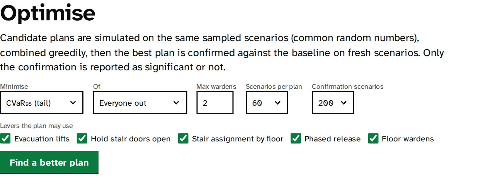
In the browser version, the recorded search used the standard settings: the tail of the time until everyone is out, 60 nights per plan, 200 fresh nights, at most 2 wardens, all five fixes.
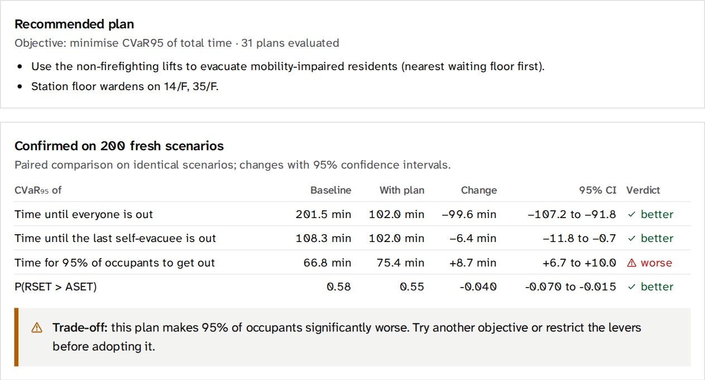
Here the plan is to use the non-firefighting lifts for mobility-impaired residents (nearest waiting floor first) and to station floor wardens on 14/F and 35/F. On the fresh nights:
The orange Trade-off warning points out the outcome that got worse. Frail residents who would otherwise have walked now wait for the lifts, and on nights when one of the evacuation lifts is broken, the other cannot keep up.
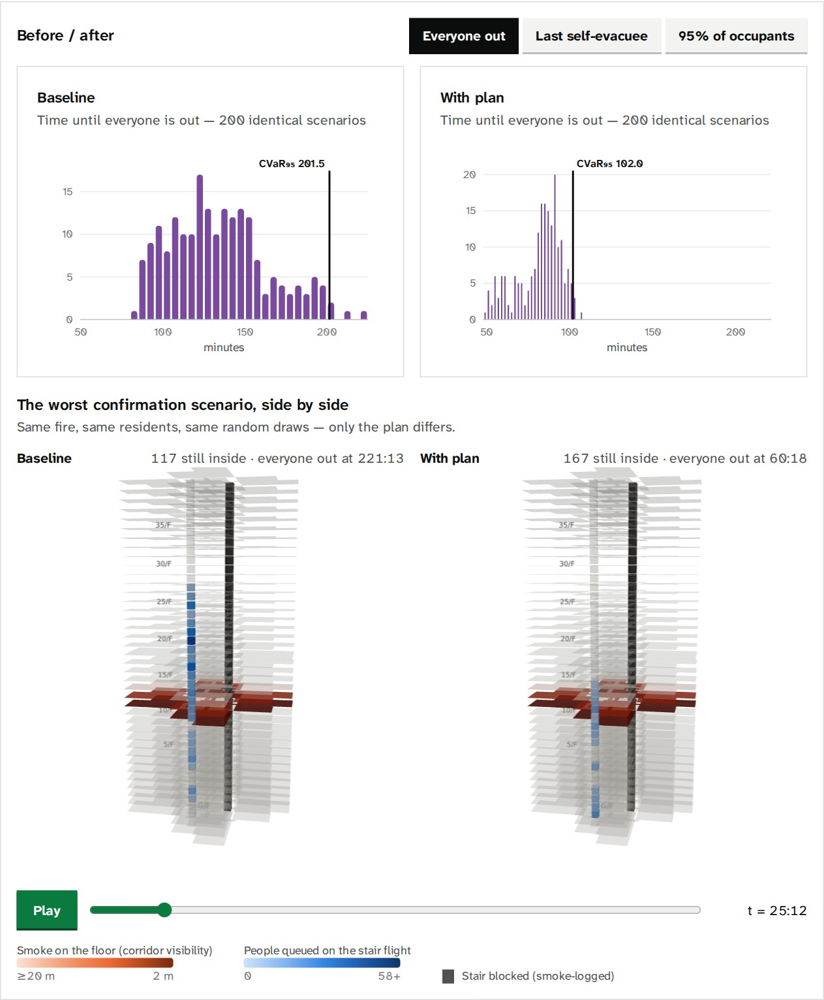
Chapter 27
Move the controls and see an estimate straight away, from the quick guesser (chapter 14). Then check it with the real simulator.
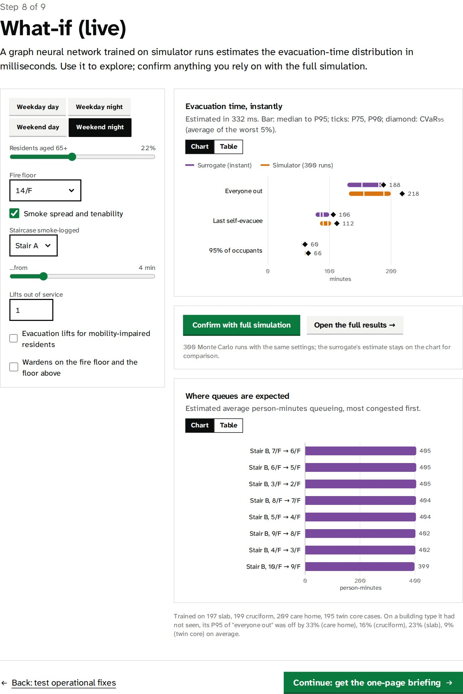
1 2 3 4 5 6The estimate updates a moment after you move a control, and the chart says how many milliseconds it took. In this example the quick guesser puts the average of the worst 5% for “everyone out” at 188 minutes; the full simulation says 218. That gap of about 14% is fine for exploring, but not for deciding.
If your settings go beyond what the network was trained on, an orange box says so and lists why:
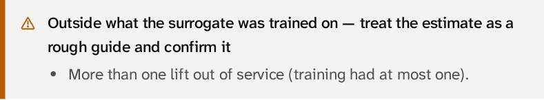
In the browser version the estimate works for any settings, but Confirm with full simulation only works for the reference scenario, because only that one was recorded. For anything else, use the full app.
Chapter 28
A one-page summary for a building manager, written only from the numbers TailSafe has worked out, and ready to save as a PDF.
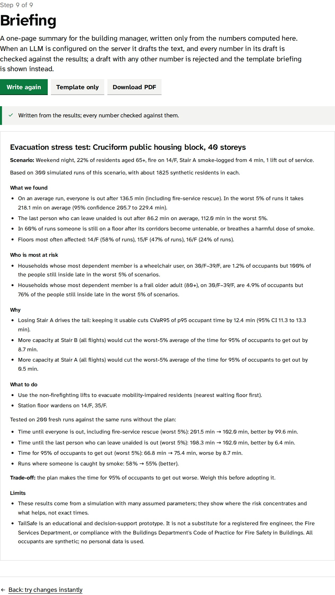
1 2 3Steps 6 and 7 are optional, but the briefing is much more useful with them. The PDF adds a chart of the time until everyone is out, before and after the plan. Remember: the briefing inherits every assumption behind the numbers. Share it as a starting point for a conversation with a fire engineer, never as a verdict on a building.
Chapter 29
No building file? The full app can turn a picture of a typical floor plan into a TailSafe building. You help it by correcting what it gets wrong.
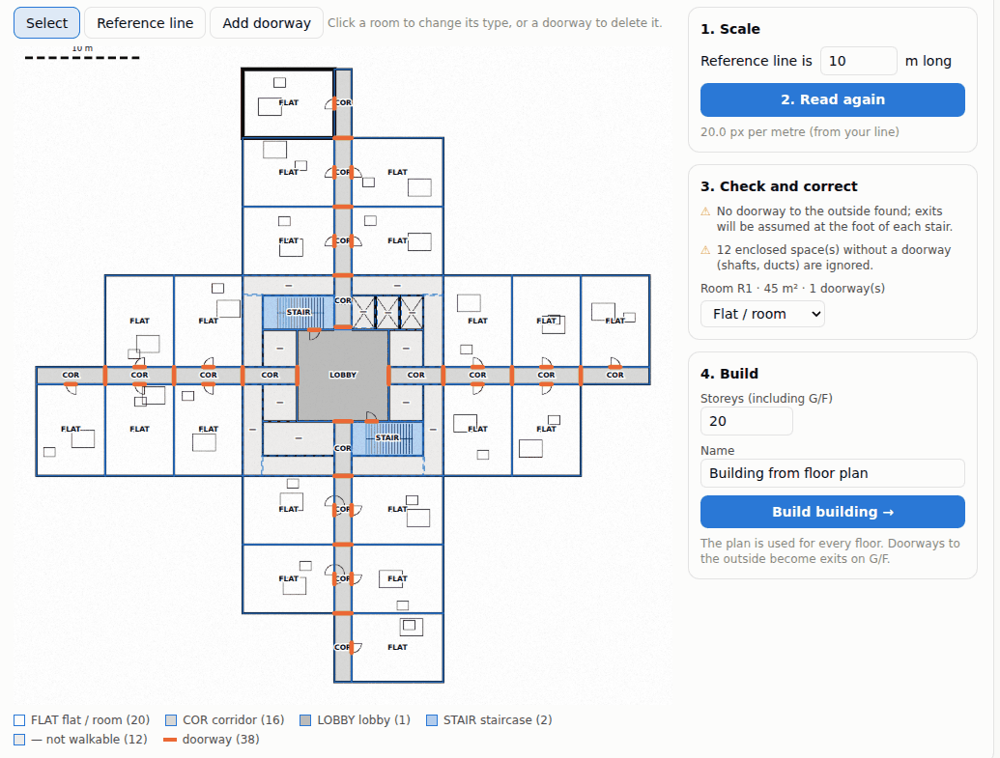
The plan is only read on the computer running the full app; it is not sent anywhere else.
A complete example from question to answer, the command line for people who like typing, the limits to keep in mind, and help for when something goes wrong.
Chapter 30
This chapter follows one question all the way through TailSafe, using a larger study of 1,000 nights run in the full app.
A 40-storey public housing block. It is Sunday, 3 a.m. A fire starts in a flat on 14/F. Four minutes later, Stair A fills with smoke. One lift is out of service. 22% of the residents are 65 or older. How bad could the evacuation get, why, and what would help?
This is TailSafe's reference scenario: the standard example that the browser version records for every building type, and that the command line uses unless you give it another one. The numbers below come from 1,000 nights with seed 0. The browser version's 300 nights are the first 300 of these, so its numbers are close but not identical.
Losing Stair A. From four minutes on, the whole block must use Stair B, which lets about 48 people a minute down. Queues form on Stair B on every bad night. The bottleneck ranking confirms it: keeping Stair A usable would cut the worst-5% average of the time for 95% of residents to get out by 12.8 minutes (12.2 to 13.4), and giving Stair B 50% more capacity by 8.6 minutes. Wider doors would hardly matter.
The plan search proposes using the non-firefighting lifts for mobility-impaired residents (nearest waiting floor first), and floor wardens on 14/F and 35/F. Checked on 400 fresh nights:
| Average of the worst 5% | Without the plan | With the plan | Change | Verdict |
|---|---|---|---|---|
| Time until everyone is out | 204.9 min | 104.6 min | −100.3 min | better |
| Time until the last self-evacuee is out | 109.5 min | 104.6 min | −5.0 min | better |
| Time for 95% of occupants to get out | 66.3 min | 75.6 min | +9.3 min | worse |
| Nights on which smoke catches someone | 58% | 55% | −3 points | better |
Follow the same path in the browser version, with 300 nights: step 3 for the spread, step 4 to watch the worst night, step 6 for the cause, step 7 for the plan, step 9 for the briefing. The numbers differ slightly from this chapter, because they come from 300 nights instead of 1,000.
Chapter 31
Everything in the web app can also be done by typing commands. This is handy for running many studies, or for keeping a record of exactly what was run.
The tailsafe command comes with the full app when it is installed from the source code (chapter 18). After make install, either type source .venv/bin/activate once in your terminal, or put .venv/bin/ in front of every command. tailsafe --help lists every command, and --help after any command lists its options.
| Command | What it does |
|---|---|
tailsafe building generate cruciform --storeys 40 --out out/tower.json | Makes a building and saves it as a building file. |
tailsafe sim run cruciform --slot weekend_night --share-65 0.22 --block-stair A@240 --plot out/run.png | Simulates one single night and draws it. A@240 means Stair A is lost after 240 seconds. |
tailsafe stress run cruciform --runs 1000 --out out/stress | The stress test: 1,000 nights of the reference scenario. Prints the key numbers and saves the results and a chart. |
tailsafe stress report out/stress --loss self_evacuation_time | Prints a saved stress test again, for another outcome. |
tailsafe stress bottlenecks out/stress | Ranks the bottlenecks of a saved stress test. |
tailsafe optimize cruciform --out out/plan | Searches for a plan and checks it on fresh nights. |
tailsafe brief --stress out/stress --optimization out/plan --pdf out/brief.pdf | Writes the one-page briefing (text and PDF). |
tailsafe micro run cruciform --index 3 --level 14 --plot out/floor.png | Replays night 3 person by person and draws 14/F. |
tailsafe vision detect plan.png --scale 0,0,200,0,10 --out det.json | Reads a floor plan. The scale says that the line from pixel (0, 0) to pixel (200, 0) is 10 metres long. |
tailsafe vision build det.json --storeys 30 --out out/plan_building.json | Stacks the read floor into a 30-storey building file. |
tailsafe validate | Runs the checks of the simulator against hand calculations. |
tailsafe params list --assumptions | Lists every number that still needs a published source. |
The stress test, the plan search and the replays take --spec followed by a scenario file, written in YAML (a simple text format) or JSON. For example, save this as my-night.yaml:
name: weekday-afternoon time_slot: weekday_day # or weekday_night, weekend_day, weekend_night share_65_plus: 0.30 # 30% of residents aged 65 or over fire_level: 10 # fire on 10/F stair_blockages: - stair: B # Stair B lost between 2 and 10 minutes in time: {dist: uniform, min: 120, max: 600} lifts_out_of_service: 1 hazard: {enabled: true} # simulate the smoke
and run it with tailsafe stress run cruciform --spec my-night.yaml --runs 300 --out out/weekday. Times are in seconds. Anything you leave out takes its standard value.
Chapter 32
Every model simplifies the world. These are the most important simplifications in TailSafe, and they are why its results are for learning and comparing, not for exact answers.
The full list is in docs/assumptions.md, and the checks are described in docs/validation.md.
Do not say
Say instead
TailSafe is an educational and decision-support prototype. It is not a substitute for a registered fire engineer, the Fire Services Department, or compliance with the Buildings Department's Code of Practice for Fire Safety in Buildings. All occupants are synthetic; no personal data is used.
Chapter 33
Something not working? Find the problem below.
A message says the browser version has no results for these settings.
The browser version only holds the reference scenario of each building. Press Back to the reference scenario, use the What-if screen for an estimate, or run the full app (chapter 17).
A step in the list is grey and cannot be clicked.
Do the earlier steps first. Most steps need a building (step 1), and the results need a stress test (step 2).
The 3D view is blank.
Your browser may have WebGL, its graphics feature, switched off. Update the browser, try another one, or turn on “hardware acceleration” in its settings.
The charts are cramped on my phone.
Turn the phone sideways, or switch the chart to Table.
The What-if screen shows an orange box “Outside what the surrogate was trained on”.
Your settings go beyond what the quick guesser learned. Treat its estimate as rough and press Confirm with full simulation (in the full app).
The briefing shows a note that a draft was rejected.
The optional AI writer used a number that is not in the results, so TailSafe showed the fixed-sentence briefing instead. Nothing needs fixing.
The floor-plan reader misses rooms or joins them.
Draw a reference line for the scale, check that the walls are thick and straight, then fix room types by hand and add missing doorways (chapter 29).
“docker: command not found”, or “Cannot connect to the Docker daemon”.
Docker is not installed, or not running. Open Docker Desktop and wait until it says it is running, then try again.
“port is already allocated”.
Something else, perhaps another copy of TailSafe, is already using port 7860. Stop it, or start TailSafe on another port with docker run -p 8080:7860 tailsafe and open http://localhost:8080.
The build stops with a download or certificate error.
Some networks, often at work, block or inspect downloads. Try another network, or ask your IT team.
My phone cannot open the full app.
Use the computer's IP address, not localhost (which on the phone means the phone itself). Check that both are on the same Wi-Fi, and allow Docker through the computer's firewall.
The first run is slow.
That is normal: the simulator prepares itself the first time (about ten seconds).
A run takes very long.
Use fewer nights (300 instead of 2,000). Ranking bottlenecks and searching for a plan are the slowest steps; fewer scenarios per plan makes the search quicker.
My numbers differ from someone else's.
Compare the seed, the number of nights, the building options and every scenario setting. The same settings with the same seed always give the same numbers.
Chapter 34
No. Every resident is made up by the computer, following general rules about ages, households and behaviour. No personal data is used.
No. It is a learning and decision-support tool. Only a registered fire engineer, the Fire Services Department and compliance with the Code of Practice can do that.
In the browser version, nothing you enter is uploaded. In the full app, buildings and floor plans go only to the computer that runs it; on a public Hugging Face Space, that is Hugging Face's server.
Because a few residents cannot use the stairs and wait for the firefighters, who, in TailSafe's model, rescue one household at a time. How rescue works is an assumption. The other two outcomes show how the stairs themselves perform.
In Hong Kong, lifts are normally kept for the firefighters during a fire, so TailSafe's standard scenario does not use them. Using some lifts to evacuate residents who cannot manage the stairs is one of the fixes you can test.
A different seed means different dice, so different nights. With enough nights the change is small, and the confidence intervals tell you how small.
300 to explore; 1,000 or more for comparisons that matter.
It is a quick learned guess. On buildings like those it trained on it is usually within 10 to 20%; on unfamiliar buildings it can be further off. That is why the confirm button exists.
Not as it is. TailSafe is built for homes: households, who is at home at different times of day, and residents' ages. Other buildings would need a different model of the people in them.
From one settings file, config/params.yaml. Every number there says where it comes from, or that it is still an assumption. tailsafe params list --assumptions lists the assumptions.
On the project's GitHub page, github.com/chingkheinganba231005/Tail_Safe, under Issues.
Chapter 35
Chapter 36
https://chingkheinganba231005.github.io/Tail_Safe/https://github.com/chingkheinganba231005/Tail_Safedocs folder: architecture.md (how each part works, in technical detail), validation.md (what has been checked, and how well it holds), assumptions.md (every simplification, in plain language) and spec.md (what TailSafe is meant to do).DEVELOPMENT.md: commands, conventions and how to publish the two versions.config/params.yaml: every number TailSafe uses, with its source.TailSafe's settings and documents point to these sources, among others. The settings file marks its published sources as still to be checked against the edition used.
TailSafe
Evacuation stress-testing for high-rise buildings: how bad the worst nights are, why, and what fixes them.
github.com/chingkheinganba231005/Tail_Safe
TailSafe is an educational and decision-support prototype. It is not a substitute for a registered fire engineer, the Fire Services Department, or compliance with the Buildings Department's Code of Practice for Fire Safety in Buildings. All occupants are synthetic; no personal data is used.